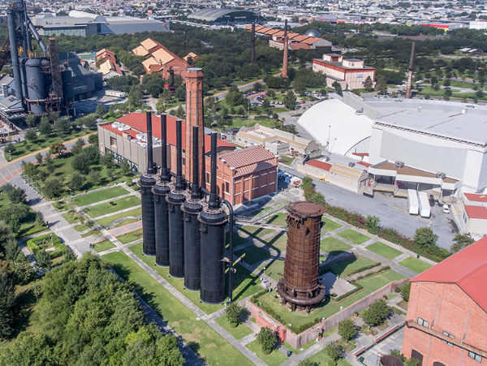

Otro de mis pasatiempos favoritos es salir a dar paseos, porque me ayuda a despejarme de todo y a sentirme más tranquilo. Me gusta caminar y disfrutar del aire fresco, tambien de observar lo que me rodea, ya sea monumentos, edificios o parques. Además de servir para relajar y dejar a un lado las preocupaciones del día, tambien me ayuda a reflexionar un poco y al mismo tiempo hacer algo de ejercicio sin sentirlo pesado.
Entre los lugares a los que he ido de paseo, a continuacion les muestro los lugares que mas me gustan para visitar siempre que me dan ganas de salir:
Parque fundidora
